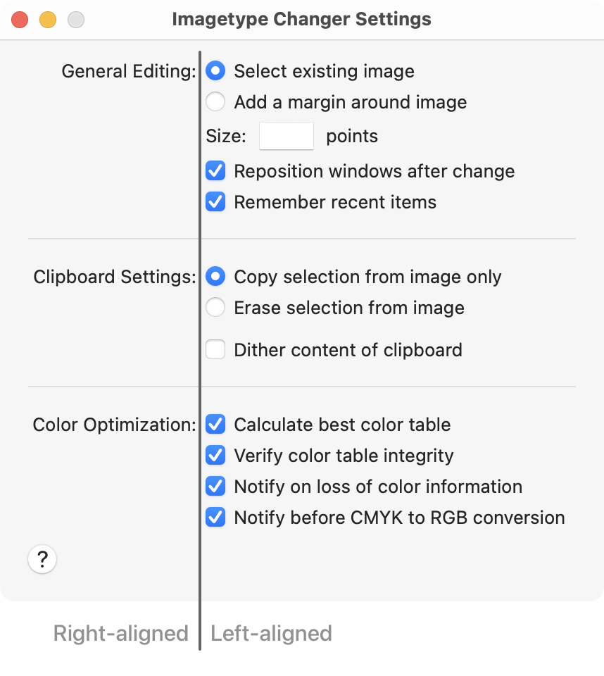
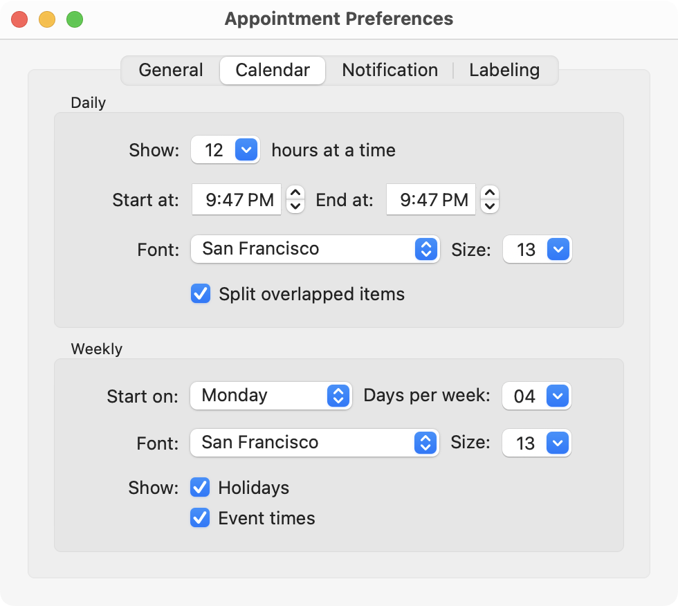
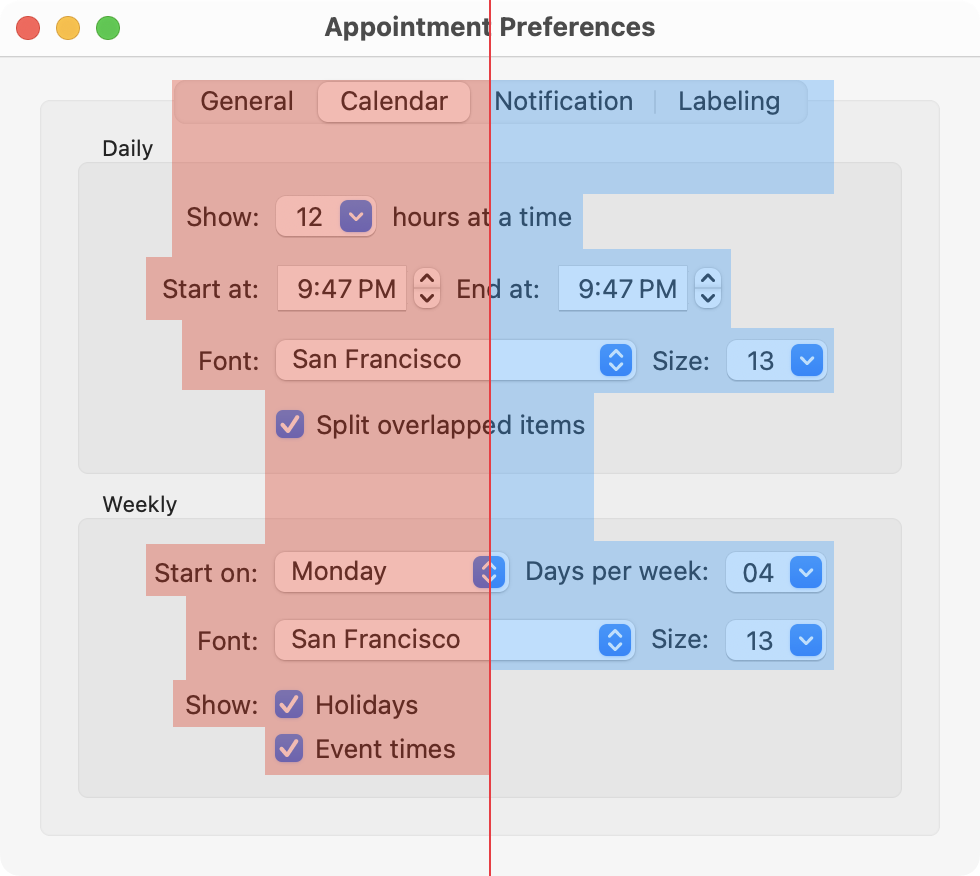
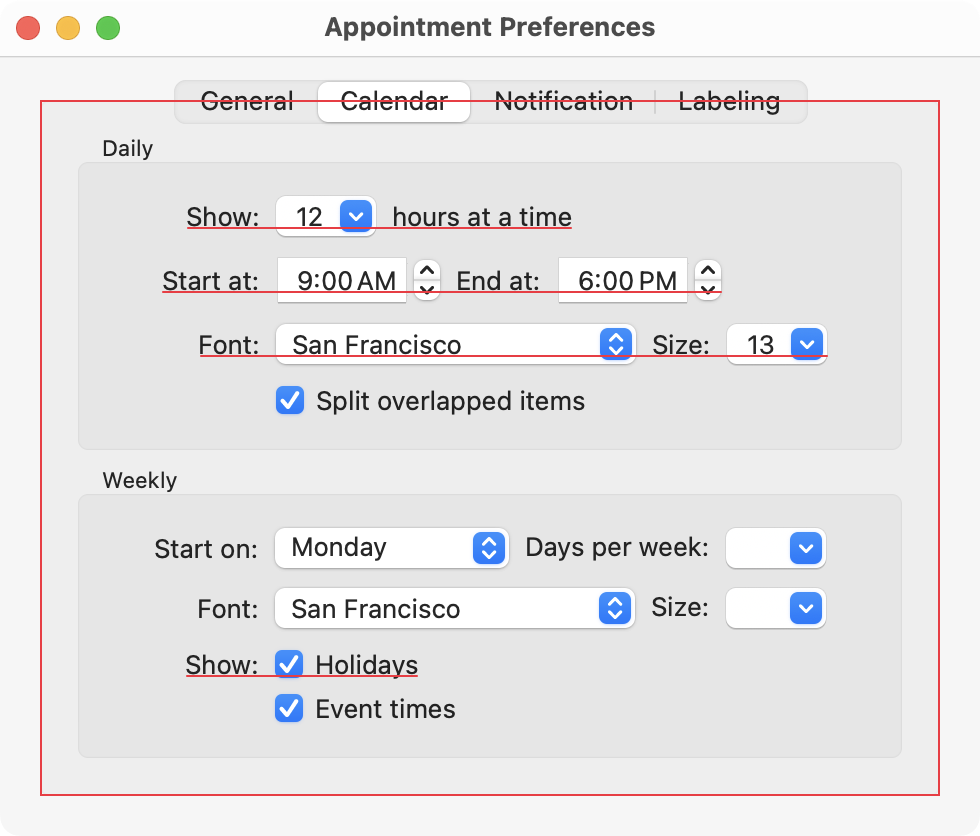
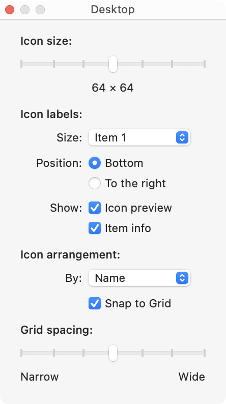
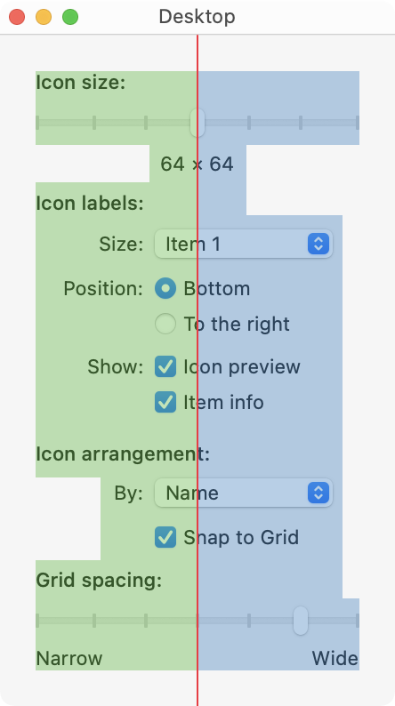

Layout Guidelines
The following sections are general guidelines that describe fundamental Mac layout principles of center equalization, text and control alignment, appropriate use of white space, and visual balance. Following these guidelines will help you create functional and aesthetically pleasing windows that are easy for Mac users to understand and use.
As you layout your window, remember to observe the principle of consistency in your decisions. If you have good reasons to break some layout guidelines, be sure to do it in a consistent way. Users tend to ignore symmetry and balance but will notice inconsistency.
Inconsistencies in a window can also lead users to conclude that the window was poorly designed and/or implemented. For example, users won’t notice if the margins inside your window edges are 18 points wide (instead of the recommended 20 points), but are likely to notice if the left margin is wider than the right one.
Positioning Regular-Sized Controls
Although there are many ways to arrange controls in a given window, there are guidelines you should follow so that your application has the clean, balanced appearance of Aqua. This section provides examples of properly designed windows and dialogs that use regular-size controls.
A Simple Settings Window
The following example showcases a very simple Settings window. Note that more advanced Settings windows would use a window toolbar to access the various sections.

This window provides a good example of a center-equalized layout. Center Equalization means that the visual weight is balanced on the left and right side of the content area. It does not mean center justification. In macOS, content should always be center-equalized in windows and panes.

Although the right side has more objects, it is balanced by the categorization labels on the left. The final result is a visually balanced window.
When labels and controls are stacked in a group, they should line up with each other vertically. Note the right alignment of the colons for the main category labels and the left alignment of the checkboxes and radio buttons. The vertical alignment of the first control in each section is also first baseline aligned with the section title label.
The following are general specifications on how to arrange controls in relation to the window that contains them.

General margins and spacing
- The section text labels are right-aligned and their stacked controls are left-aligned.
- Controls not in a group box or a tab view should be 14 points from the titlebar or toolbar.
- There should be a 20 point margin all along the left, right, and bottom sides.
- Leave 8 points between the colons of the section labels and the stacked controls they represent.
- If you include a Help button, it should always be placed on the left bottom corner.
Spacing between individual controls
- For regular size controls, leave 8 points of space between controls.
- Leave at least 12 points of space above and below separators.
- Leave at least 18 points of space between the bottom group of controls and the buttons (This would include buttons like a Help button shown above or push buttons like OK and Cancel).
Additional considerations
- If one control depends on the state of another, place it below and visually indent it in such a way that the leading edge aligns with the text label of the control it depends on.
- Including a Help button is recommended and it should open the Help Viewer to a page specific to the Settings window.
A Tabbed Window
In this tabbed window example, Center Equalization is again present. The overall effect of the window is a balance between visual weight of the controls on both sides of the invisible center axis. The controls are also collectively balanced within each group box so that the distance from the farthest control on each side is the same for both left and right sides.
Always center tab views within their window.
Pay extra attention to popup buttons, text fields, pickers, and combo boxes. They are taller than simpler settings controls such as checkboxes and radio buttons. Allow for extra spacing when stacking them to prevent a cluttered look. Additionally, be sure to first baseline align all elements of the same row. This will ensure the text of labels, popup buttons, combo boxes, etc. are all aligned in their row.
General margins and spacing
- Leave 12 points of space from the top of the tab view to the bottom of the titlebar or toolbar.
- There should be a 20-point margin all the left, bottom, and right side of the window.
- Within group boxes, leave at least 16-point margin between controls and the edge of the group box.
- Within the tab view, leave at least 16-point margin between controls or group boxes and the edge of the tab view.
Spacing between individual controls
- The colons for stacked labels are right-aligned.
- Stacked controls are left-aligned when appropriate.
- Similar controls have consistent widths. For example, the widths of the Font popup buttons and the widths of the combo boxes are the same despite being in different group boxes.
Additional considerations
- Including a Help button is recommended (not pictured). If your Settings window is driven by a tab view, the Help button should open the Help Viewer to a page specific to the selected tab.
Positioning Small and Mini Controls
Use smaller versions of controls only when necessary. Your first choice in designing for the Mac should always be to use the full-size controls.
You can use the smaller versions of controls when space is at a premium, such as tool palettes, toolbar accessory views, HUDs, inspector sidebars, and other utility windows. Avoid mixing different sizes of controls in the same window or pane.
Layout Example for Small Controls
To save space while creating distinct sections, this example uses a bold font for each label section instead of using horizontal separators or group boxes.
As with using regular-sized controls, you should use the center-equalized approach to laying out small controls.
General margins and spacing
- The section text labels are right-aligned and their stacked controls are left-aligned.
- Controls not in a group box or a tab view should be 14 points from the titlebar or toolbar.
- There should be a 20 point margin all along the left, right, and bottom sides. Note that if you use group boxes in a panel with small controls, a narrower margin is more suitable (10 point margins all around).
Spacing between individual controls
- Use equal spacing between groups of controls. Use 12 points.
- Use equal spacing between section labels and the first control in the section. For example, use 8 points between the label "Icon labels:" and the first row below it.
Additional considerations
- Similar stacked controls should have similar widths even if they're in different sections.